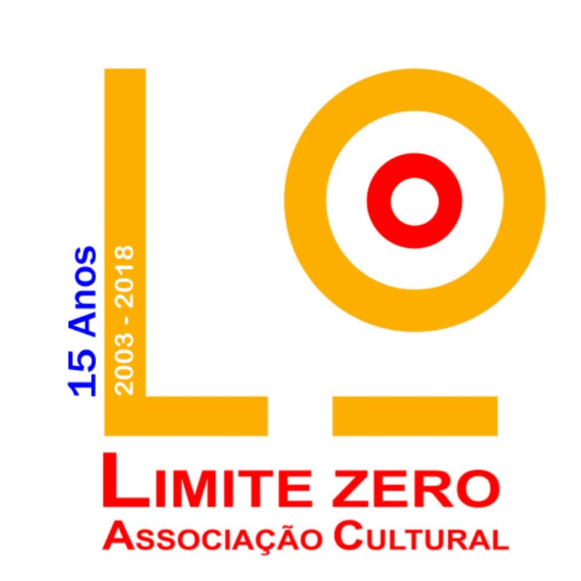

Pequeno cabaret ao amanhecer
Limite Zero
Novo circo
"Pequeno cabaret ao amanhecer" é um espetáculo de formas animadas para adultos.
Um exercício de jogo entre o real e o irreal, do concreto e do abstrato, do dizível e do indizível, onde a animação das personagens se funde com o ator. Neste cabaret, as formas animadas circulam numa variedade de números e possibilidades entre o real convencionado e o irreal, explorando as relações entre o corpo do ator e objeto manipulado.
A Limite Zero assume-se como organismo cultural voltado para a concretização de iniciativas em diversos domínios artísticos. A atividade da companhia estende-se à produção de espetáculos de teatro e de formas animadas, à produção vídeo e à formação.
Ficha técnica
Texto original
Paula Carballeira
Encenação
Raul Constante Pereira
Movimento
João Vladimiro
Música e sonoplastia
Rui Lima e Sérgio Martins
Desenho de luz
Pedro Vieira Carvalho
Marionetas e cenografia
Albano Martins
Interpretação
Raquel Rosmaninho, Rui Oliveira e Patrícia Cruz
Operação técnica
Pé de Cabra
Coprodução
Teatro Municipal do Porto, Limite Zero, FIMP - Festival Internacional de Marionetas do Porto e Teatro Municipal de Bragança